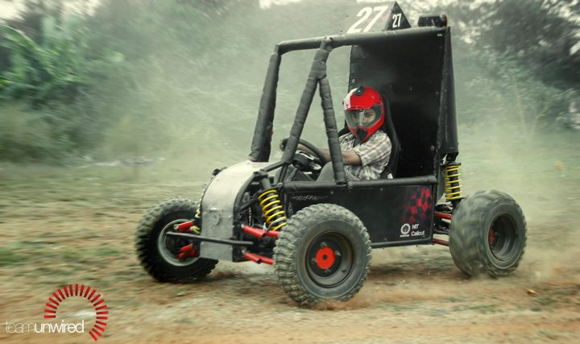
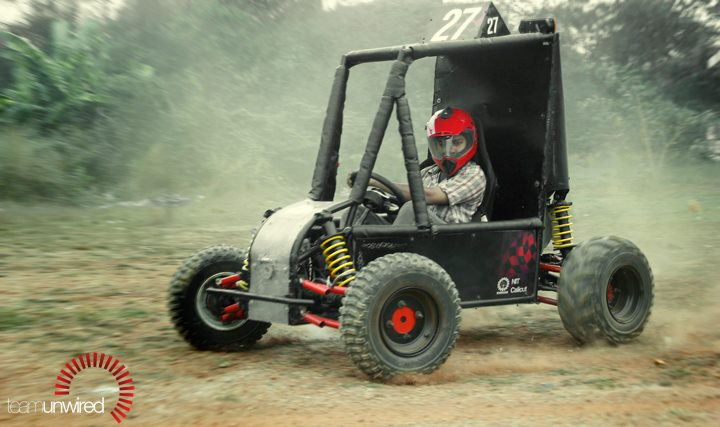

Baja SAEINDIA India is an intercollegiate vehile design and fabrication competition organised by the Society of Automotive Engineers, India. The goal in Baja SAE is to design,build and race off-road vehicles that can withstand the harshest elements of rough terrain.
Team Unwired has had two success stories at the Indian edition of the Baja. The team made its maiden attempt in the series with 'Gasotech Unwind 1.0' at Baja 2010. The team was the first in the history of Baja to completely design and fabricate a gearbox for the vehicle. It also was the first to bring chromoly as a material for the rollcage which helped reduce weight and improve strength. It was the 7th best designed vehicle in Baja SAE Asia.With the experience gained, the team went on to take up Baja 2012 with a more competitive stance. 'Gasotech Unwind 2.0' came out to be one of the best cars at the event. The car featured a custom built gearbox with an incorporated LSD and CVT, making driving a pleasure while ensuring the best power output when needed.It was placed 16th out of 244 teams and was 3rd fastest in hill climb and 8th fastest in acceleration. Our Faculty Advisors, Dr. V Sajith and Mr.Shijo Thomas won the Dronacharya award for the best faculties in charge.


 

Formula Student (FSUK) is one of the world's foremost educational motorsport competitions, run by the Institution of Mechanical Engineers. Backed by industry and high profile engineers such as Patron Ross Brawn OBE, the competition aims to inspire and develop enterprising and innovative young engineers. Universities from across the globe are challenged to design and build a single-seat racing car in order to compete in static and dynamic events, which demonstrate their understanding and test the performance of the vehicle.
After having played a couple of successful innings to a home audience in two editions of Baja SAEINDIA, Team Unwired decided to make its mark in the international arena by taking part in Formula Student UK. The team's single seater race car 'Kennametal Unleashed 1.0' pulled off one of the surprises at the event with quite a good number of exciting elements. Unleashed 1.0 still remains as the one and only Indian made car at Formula Student UK to have employed a complex dry sump system. Team Unwired was one among the very few rookie teams to have hit the Silverstone track with a winged car as well. Features like custom made ECU and light weight chromoly chassis added to the unique features of the car. The team's performance at static events like Design Presentation and Business Plan Presentation were highly appreciated too.

The SUPRA SAEINDIA 2014 is a forthcoming competition which presents Under Graduate and Post Graduate Engineering Students the task of designing, modeling and fabricating a formula type racing car. The concept behind SUPRA SAEINDIA 2014 is that a fictional manufacturing company has contacted a design team to develop a small Formula style race car. The prototype is to be evaluated for its potential as a racing car.
The target marketing group for the race car is the non-professional weekend autocross racer. Each team designs and produces a prototype based on well laid down rules & regulations.
The project fuels the exuberance of the youth by providing teams a platform to test their mettle, giving them a pragmatic exposure to real world challenges as faced in the industry. Students realize their talent through such an experience, making them proven candidates for the future as technocrats, entrepreneurs, designers, innovators and leaders
'Kalkitech Unleashed 2.0', will be the second formula type race car to roll out of the NITC racing shutters. With the design and analysis complete, the team is now fully ramped up to deal with engine tuning and fabrication.